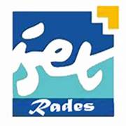
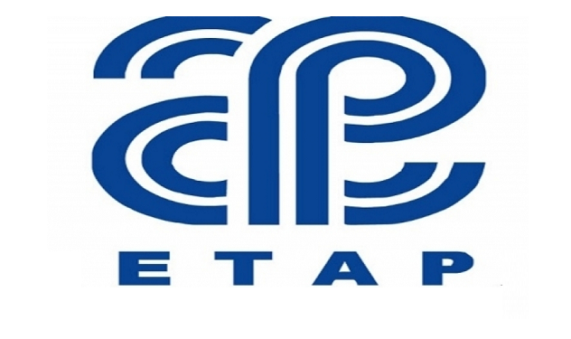

Développement d’une application web
pour la gestion
des consommables

Ce projet de fin d'études consiste en la conception et le développement d'une application web full-stack dédiée à la gestion des consommables au sein de l'Entreprise Tunisienne d'Activités Pétrolières (ETAP). Le système permet le suivi en temps réel du stock, la traçabilité complète des mouvements d'entrée et de sortie, la gestion automatisée des alertes d'expiration des produits, ainsi qu'un workflow intégré de demandes et de validations hiérarchiques. Développée avec Angular côté frontend et Laravel côté backend, l'application repose sur une architecture REST sécurisée par Laravel Sanctum et une base de données MySQL. Elle intègre également un module OCR pour la reconnaissance optique des documents et un système de messagerie interne.
Gestion de stock ; Consommables ; Angular ; Laravel ; REST API ; Expiration ; OCR ; Traçabilité
Dans un contexte professionnel où la gestion des consommables représente un enjeu majeur, les méthodes manuelles traditionnelles montrent leurs limites : pertes de stock, produits périmés non détectés, manque de traçabilité et difficultés dans le suivi des demandes.
L'objectif de ce projet est de concevoir et développer une application web complète permettant de centraliser, automatiser et sécuriser l'ensemble du processus de gestion des consommables au sein de l'ETAP, depuis la réception jusqu'à l'archivage.
L'application adopte une architecture client-serveur basée sur une API REST :
Technologies utilisées :
- Frontend : Angular, TypeScript, SCSS
- Backend : Laravel, PHP
- Base de données : MySQL
- Authentification : Laravel Sanctum (tokens)
- OCR : Tesseract via API backend
| Module | Description |
|---|---|
| Dashboard | Statistiques et KPIs en temps réel |
| Gestion de Stock | Produits, lots, catégories, unités |
| Mouvements | Entrées, sorties et transferts |
| Utilisateurs | Multi-rôles avec permissions |
| Fournisseurs | Répertoire et entrepôts |
| Alertes | Expiration automatique (7j avant) |
| Demandes | Workflow de validation hiérarchique |
| OCR | Extraction optique de données |
| Chat | Messagerie interne intégrée |
Le système gère le cycle de vie complet des consommables :
- Création : Enregistrement avec numéro de lot et date d'expiration
- Alerte : Notification automatique 7 jours avant expiration
- Blocage : Verrouillage automatique des produits expirés
- Archivage : Historisation complète pour traçabilité
La sécurité est assurée à plusieurs niveaux :
- Authentification : Tokens Sanctum avec gestion de sessions
- Autorisation : Système de rôles (Admin, agent de stock,responsable de stock,directeur , Utilisateur)
- Validation : Contrôle des données côté serveur et client
- Gestion multi-sièges : Charguia II, Mohamed V, Kheireddine Pacha
L'application a permis d'atteindre les objectifs suivants :
- Réduction significative des pertes dues aux produits périmés grâce aux alertes automatiques
- Traçabilité totale des mouvements de stock avec historique complet
- Optimisation du processus de demandes via un workflow de validation structuré
- Gain de temps grâce au module OCR pour l'extraction de données
- Amélioration de la communication interne via le chat intégré
Ce projet offre une solution complète et moderne pour optimiser la gestion des consommables au sein de l'ETAP. L'application permet de réduire le gaspillage, assurer une traçabilité totale et améliorer la productivité grâce à l'automatisation intelligente des processus métier.
Perspectives : Intégration d'un module de prédiction de consommation basé sur l'intelligence artificielle, déploiement d'une application mobile et mise en place de tableaux de bord avancés avec des indicateurs prévisionnels.
Nous tenons à exprimer notre gratitude envers nos encadrants Mme Imen MSAKNI et M. Hafedh DERGHAM pour leur soutien et leurs conseils précieux tout au long de ce projet. Nous remercions également l'ISET et l'ETAP pour la confiance et les ressources mises à notre disposition.
[1] Angular Documentation. Angular - Introduction to the Angular Docs. https://angular.dev
[2] Laravel Documentation. Laravel - The PHP Framework For Web Artisans. https://laravel.com/docs
[3] Taylor Otwell. Laravel Sanctum - API Token Authentication. Laravel LLC, 2024.
[4] Tesseract OCR. Open Source OCR Engine. https://github.com/tesseract-ocr
[5] MySQL Documentation. MySQL Reference Manual. Oracle Corporation, 2024.